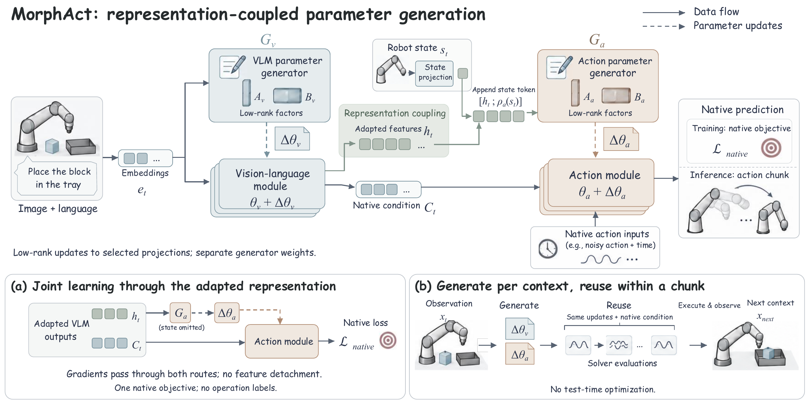

Generate for the context
Queries identify layers, projections, and rank positions. Token-level context conditions the generated A/B factors.
Vision · Language · Action
 MorphAct: Contextual Parameterization
of Vision–Language–Action Models
MorphAct: Contextual Parameterization
of Vision–Language–Action Models
One shared adaptation rule.
Parameters that change with the robot’s context.
01 / The idea
A single task moves through reaching, contact, transport, and precise placement. Its perceptual and control demands change along the way.
MorphAct learns one shared adaptation rule that maps the current observation, instruction, and robot state to context-dependent parameter updates. The policy adapts as the scene changes, without operation labels or separate expert policies.
xt = (ot, ℓ, st) is the current context; Δθ(xt) is its generated update; Ŷt is the predicted action chunk.

02 / Method
Two generators produce low-rank updates for the vision–language and action modules. Their connection follows the policy’s computation.
The VLM generator first adapts the representation. The action generator then uses the adapted features and robot state to generate its update, while the action predictor retains its native conditioning and solver inputs.

Queries identify layers, projections, and rank positions. Token-level context conditions the generated A/B factors.
The native action loss trains both generators through adapted action conditioning and action-side parameter generation.
Generate once per observation. Cache the updates and native action condition for every solver evaluation; refresh when replanning.
For block j, A: din × r and B: r × dout. The base weights stay frozen; the low-rank factors change with the context.
The row-vector projection uses a factored residual, without materializing a dense update. Factor layouts follow each backbone’s projection geometry.
Φ includes both generators, the state projection, and projectors retained as trainable by the adaptation configuration. ξ is the randomness used by the native objective.
For π0 and π0.5, training samples a time τ and predicts the velocity on the action–noise path:
The action generator uses final adapted multimodal tokens and robot state. Layer-wise prefix key–value states provide native action conditioning. Noisy actions and solver time remain in the native action path.
03 / Simulation benchmarks
Closed-loop evaluation on 40 LIBERO tasks and 50 Meta-World tasks, with the complete suite and difficulty breakdown for X-VLA, π0, and π0.5.
40 tasks · 4 suites · 50 rollouts per task · 2,000 rollouts per evaluation
BaselineMorphAct
+4.15% mean success
+2.50% mean success
+1.75% mean success
Swipe horizontally to view all columns
| Backbone | Method | Spatial | Object | Goal | Long | Mean | Var. (pp²) |
|---|---|---|---|---|---|---|---|
| X-VLA | Baseline | 95.40 | 96.60 | 96.00 | 84.20 | 93.05 | — |
| MorphAct | 98.67 | 99.87 | 97.07 | 93.20 | 97.20 | 0.0300 | |
| π0 | Baseline | 96.80 | 98.80 | 95.80 | 85.20 | 94.15 | — |
| MorphAct | 98.00 | 99.60 | 96.60 | 92.40 | 96.65 | 0.0517 | |
| π0.5 | Baseline | 98.80 | 98.20 | 98.00 | 92.40 | 96.85 | — |
| MorphAct | 98.33 | 99.67 | 98.87 | 97.53 | 98.60 | 0.0525 |
Long-horizon gains across all three backbones: +9.00% on X-VLA, +7.20% on π0, and +5.13% on π0.5.
Protocol: Mean gives equal weight to the four suites. Long denotes LIBERO-10. MorphAct uses execution horizon H10. MorphAct scores average three selected evaluations. Displayed gains are absolute success-rate differences. Var. is the sample variance of their overall scores; baseline variance is unreported. Bold marks the best score within each backbone, including ties.
50 tasks · 4 difficulty groups · 20 rollouts per task · 1,000 rollouts per evaluation
BaselineMorphAct
+7.57% mean success
+16.30% mean success
+15.72% mean success
Swipe horizontally to view all columns
| Backbone | Method | Easy | Medium | Hard | Very Hard | Avg. | Var. (pp²) |
|---|---|---|---|---|---|---|---|
| X-VLA | Baseline | 72.50 | 46.36 | 48.30 | 55.00 | 55.54 | — |
| MorphAct | 83.99 | 58.18 | 55.28 | 55.00 | 63.11 | 1.8400 | |
| π0 | Baseline | 77.90 | 51.80 | 53.30 | 20.00 | 50.75 | — |
| MorphAct | 82.44 | 71.36 | 56.39 | 58.00 | 67.05 | 0.6342 | |
| π0.5 | Baseline | 70.50 | 45.00 | 38.30 | 41.00 | 48.70 | — |
| MorphAct | 85.77 | 59.85 | 66.39 | 45.67 | 64.42 | 0.3970 |
Benefits extend to the harder groups: π0 improves Very Hard from 20.00% to 58.00%; π0.5 improves Hard from 38.30% to 66.39%.
Protocol: Avg. gives equal weight to Easy (28 tasks), Medium (11), Hard (6), and Very Hard (5). MorphAct scores average three selected evaluations. Displayed gains are absolute success-rate differences. Var. is the sample variance of their overall scores; baseline variance is unreported. Bold marks the best score within each backbone, including ties.
04 / Ablations
Six X-VLA variants on all four LIBERO suites isolate the generation condition, module coverage, and representation coupling.
A / Generation condition
+8.95%
Current-context generation reaches 97.20% mean success, versus 88.25% for Task-ID and 87.50% for Constant.
B / Module coverage
97.20%
The complete model exceeds either single-module variant: Action-only reaches 81.00%; VLM-only reaches 43.50%.
C / Feature coupling
+11.20%
Conditioning action-side generation on adapted VLM features improves mean success from 86.00% to 97.20%.
Swipe horizontally to view all columns
| Variant / controlled change | Spatial | Object | Goal | Long | Mean |
|---|---|---|---|---|---|
| MorphActCurrent context; both modules; adapted features | 98.67 | 99.87 | 97.07 | 93.20 | 97.20 |
| ConstantOne fixed generation condition across all tasks | 93.40 | 90.00 | 89.00 | 77.60 | 87.50 |
| Task-IDOne fixed generation condition per task | 90.00 | 90.80 | 91.20 | 81.00 | 88.25 |
| VLM-onlyGenerated updates in the VLM only | 40.00 | 59.00 | 42.00 | 33.00 | 43.50 |
| Action-onlyGenerated updates in the action module only | 88.80 | 92.00 | 73.80 | 69.40 | 81.00 |
| UnadaptedPre-adaptation features condition the action generator | 91.00 | 97.80 | 83.60 | 71.60 | 86.00 |
Controlled comparisons: Constant and Task-ID change only the generation condition and retain normal policy inputs. VLM-only and Action-only disable generated updates in one module. Unadapted keeps both generators and adapted action prediction, but conditions the action generator on pre-adaptation features. Mean averages the four suites.
On Long, using adapted features for action-side generation raises success from 71.60% to 93.20% (+21.60%), separating the benefit of representation coupling from upstream adaptation alone.
05 / Real-world manipulation
MorphAct improves π0.5 on all four physical manipulation tasks by 8–14%.
Each method is evaluated over 50 physical rollouts per task. The paired clips show separate trials at the same playback speed within each task; success rates below summarize the full evaluations.
Arrange letter blocks through coordinated grasps and changes in orientation.
π0.5 82.00%MorphAct 92.00%
Grasp, lift, and transfer a water bottle between locations.
π0.5 78.00%MorphAct 86.00%
Select hardware, transport it, and sort it into the target containers.
π0.5 8.00%MorphAct 22.00%
Engage the handle and place an object inside the cabinet.
π0.5 84.00%MorphAct 96.00%